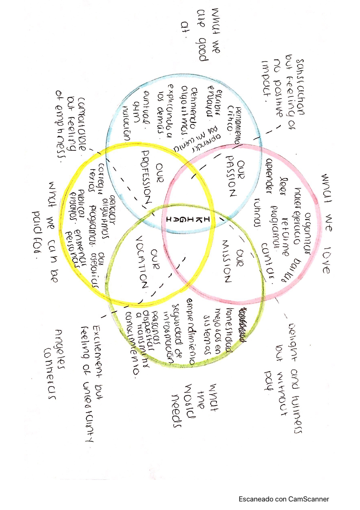

Q & A
-
Explica y elabora un diagrama sobre cómo funciona AJAX con jQuery.

-
¿Qué alternativas a jQuery existen?
Una de las principales alternativas al uso de jQuery es el uso de Javascript puro, sin embargo, para aplicaciones más complejas que requieran el uso de alguna librería las mejores opciones son:
-
Zepto.js: Se autodefine como una alternativa compatible con jQuery especialmente dirigida a entornos muy exigentes en rendimiento.
-
XUI: Hereda sintaxis de jQuery y está especialmente enfocada al desarrollo de aplicaciones móviles.
-
Sizzle: La librería selectora más utilizada en grandes proyectos y el motor de selección interno de jQuery.
-
Qwery: Libreria selectora con el menor tamaño hoy en día (1Kb), lo que representa 1/4 del tamaño de Sizzle.
[1]
-
¿Qué es una promesa en js?
Es un objeto que representa la terminación o fracaso de una operación asíncrona, este objeto es devuelto con funciones callback adjuntas en lugar de pasar callbacks a funciones. Las promesas hacen que el código sea mantenible, estas se crean con un constructor llamado Promise y se le pasa la función que recibe dos parámetros: resolve y eject, los cuales nos permiten indicar a la misma el resultado. Tienen tres posibles estados (pendiente, resuleta, rechazada) y pueden ser encadenadas. [2]
-
¿Cómo funcionan async y await?
Las funciones Async/await, basadas en promises, nos ayudan a escribir código completamente síncrono mientras realizamos tareas asíncronas en segundo plano. Una de las ventajas es que el código síncrono es mucho más fácil de entender.
La función Async nos proporciona una sintaxis limpia y concisa que nos permite escribir menos código para conseguir los mismos resultados que prometemos. Las funciones de asincronía se crean preparando la palabra async antes de la declaración de función. La función Await devuelve lo que sea que devuelva la función de asíncrono cuando esté hecho. [2]
Referencias
- [1] https://www.etnassoft.com/2011/03/28/alternativas-a-jquery/
-
[2] https://www.ma-no.org/es/programacion/javascript/async-await-como-funcionan-realmente-un-ejemplo